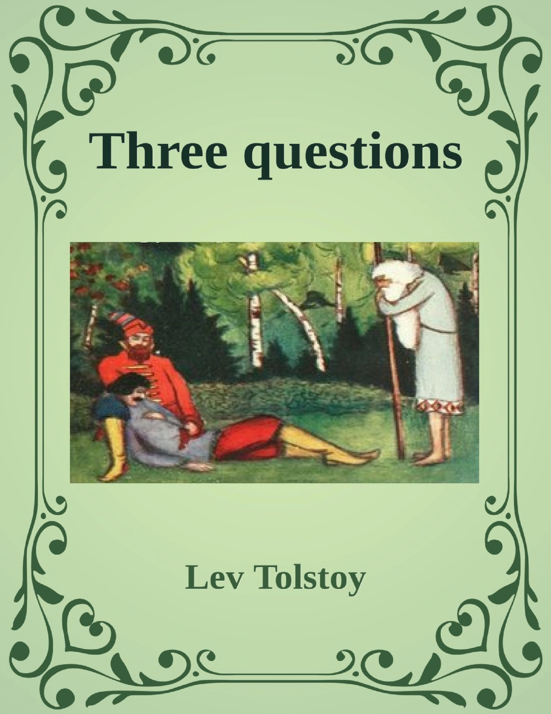
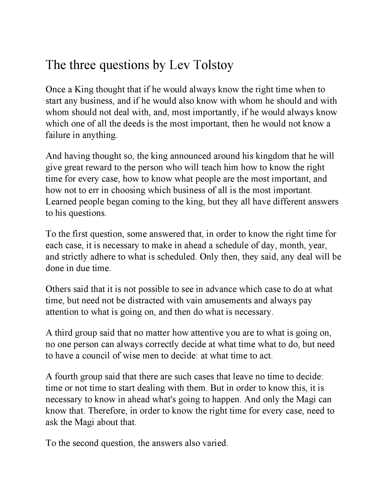
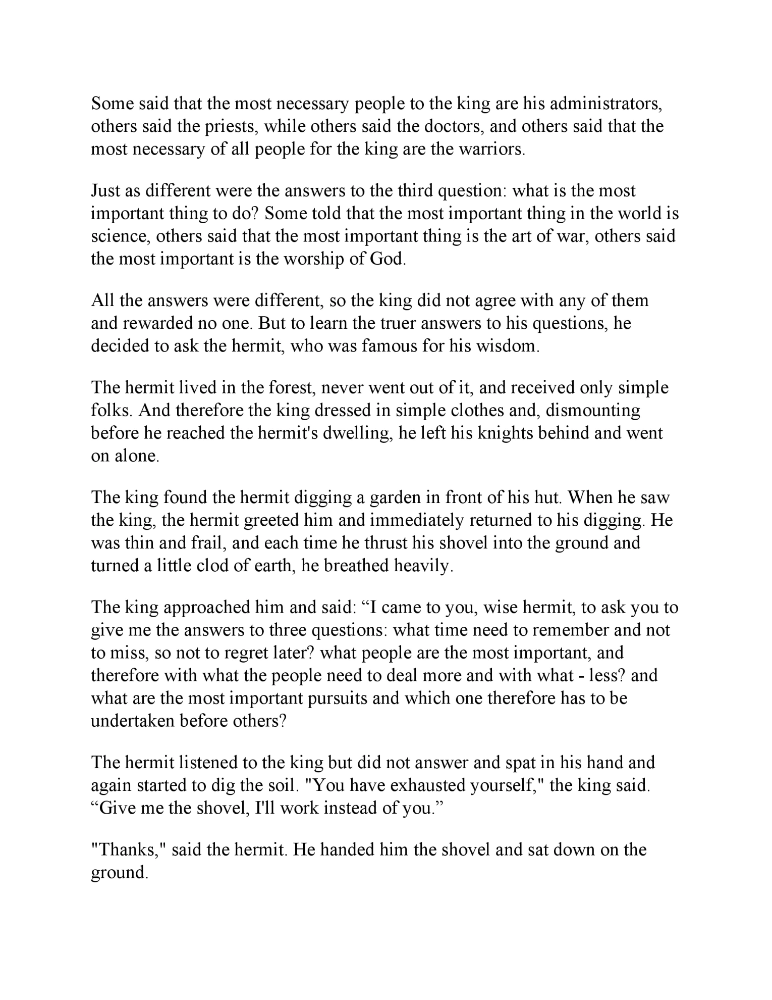
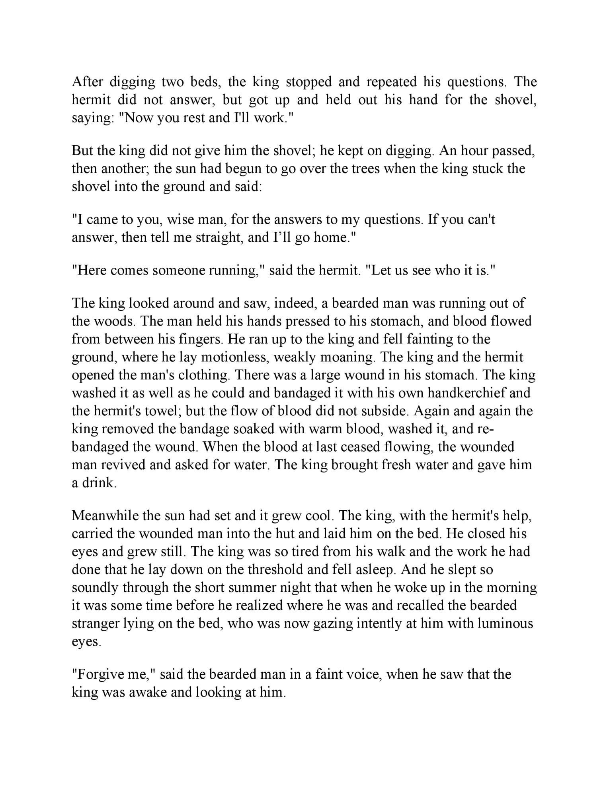
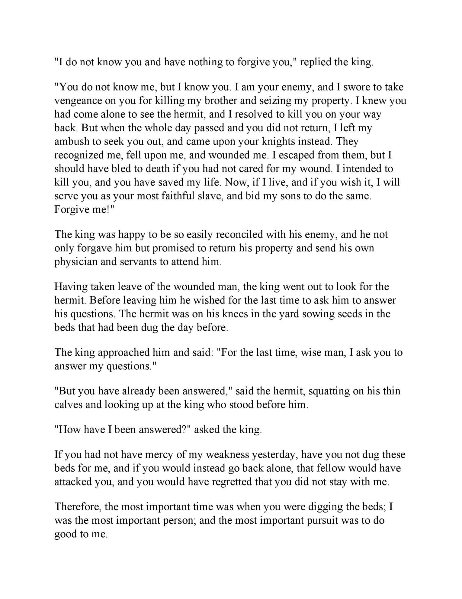
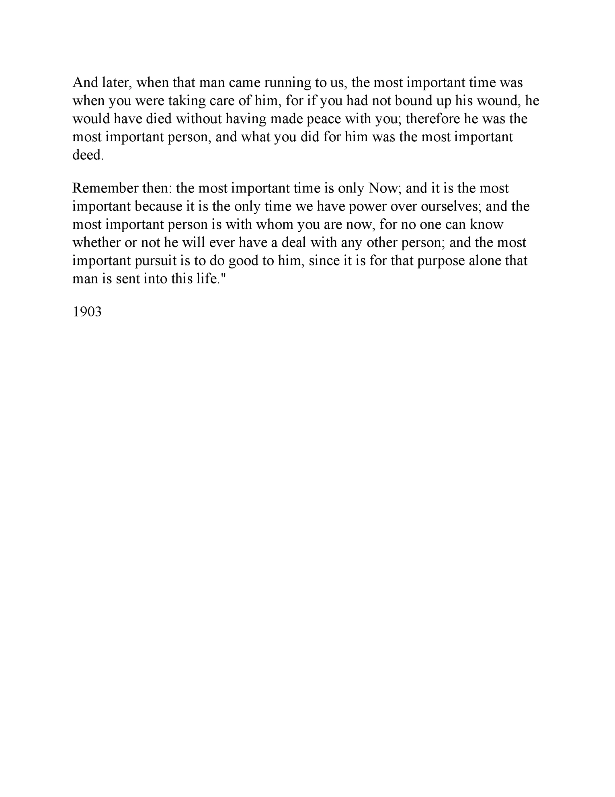
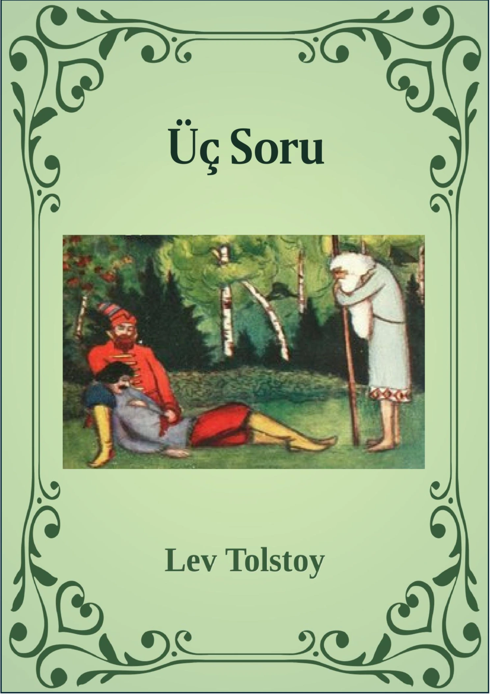
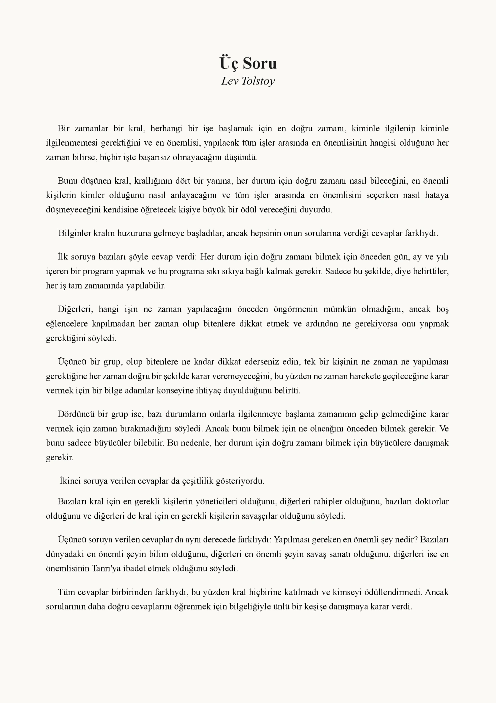
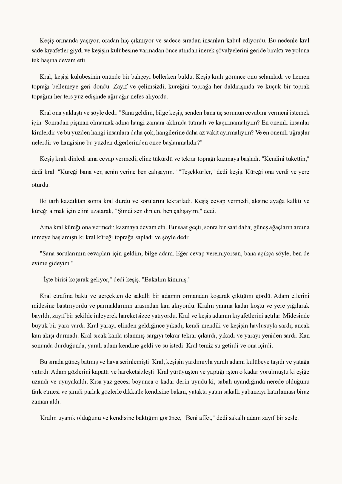
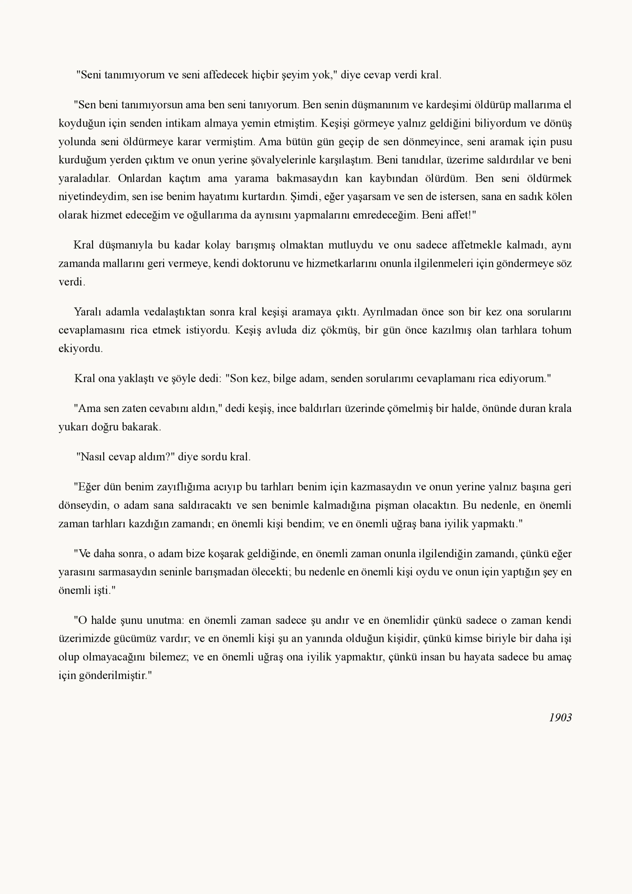

Edebi Çeviri
Dil çifti:
İngilizce - Türkçe
Belge Türü:
Edebi Metin
Açıklama:
Bu çalışmada, Lev Tolstoy’un “Üç Soru” adlı kısa öyküsü, Sündüz Öztürk Kasar’ın Çeviri Göstergebilimi yaklaşımı doğrultusunda geliştirdiği metin çözümleme modeli kullanılarak incelenmiştir.
Analizde metnin anlam evreni; eyleyenler, söylemsel teknikler, sembolizm, odaklanma ve anlatı yapıları gibi göstergebilimsel unsurlar üzerinden ele alınmıştır.









